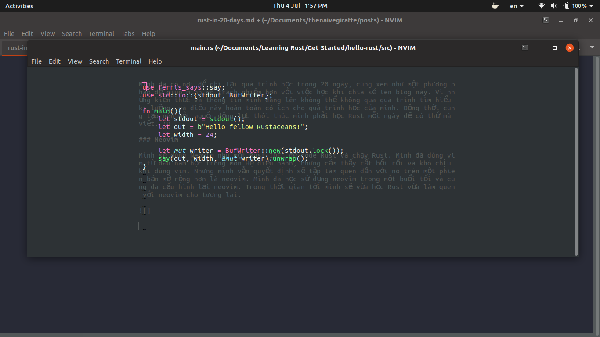

Rust trong 20 ngày
Hiện giờ là mùa hè năm 2019, mình đang trong kì nghỉ giữa năm 2 và sắp lên năm 3. Sau chuỗi ngày giải lao quá đà, mình quyết định bắt tay vào học gì đó. Và Rust là sự lựa chọn của mình.
Đồng thời mình cũng dựng lại blog này dựa trên nền tảng blog thefullsnack của anh Huytd. Đây là một ngôi nhà mới cho những bài viết về chuyên ngành trên con đường học tập của mình. Sau những đêm hoảng loạn tìm code trên github, stackoverflow và blogs để hoàn thành các bài tập và đồ án, oan oan tương báo, giờ là lúc mình chia sẻ lại những kiến thức tích lũy được đến mọi người.
Tại sao là Rust ?
Mình sẽ không phân tích chuyên sâu về ngôn ngữ này (như độ an toàn, điểm cải thiện so với C, C++, ...) vì thật sự mình vẫn chưa đủ hiểu để phân tích những vấn đề đó. Có thể sau 20 ngày mình sẽ phân tích chuyên sâu sau. Đơn giản chỉ có 2 nguyên nhân chính để mình chọn Rust cho mùa hè này, đó là:
Để có một nền tảng vững chắc
Mình đã học C, C++ ở Bách Khoa được 2 năm, nhưng vẫn chưa hiểu rõ mọi thứ hoạt động ra sao, phải vào stackoverflow mỗi khi code. Với Rust, đây là ngôn ngữ mình hi vọng sẽ giúp mình lấp đầy lỗ hổng đó.
Hi vọng học được suy nghĩ đúng đắn về hoạt động của những dòng mà mình code ra.
Rust có những bộ hướng dẫn rõ ràng và vững chắc
Rust có cho mình một bộ documentation và hướng dẫn học vô cùng bài bản. Một cuốn sách, những bài tập và đáp án, tất cả hoàn toàn miễn phí, dễ tiếp cận và không quá nhiều dẫn đến hỗn loạn sẽ giúp mục tiêu tự học của mình rõ ràng và dễ dàng hơn.
Mình muốn làm vững lại nền tảng của mình trước, và có một công cụ phù hợp cùng bộ hướng dẫn rõ ràng ngay trước mắt. Hoàn hảo cho việc tự học trong mùa hè này.
Và có thể bạn chưa biết, blog này cũng được anh Huytd xây dựng dựa trên Rust.
Tại sao lại 20 ngày ?
Mình biết 20 ngày là không đủ để học toàn bộ những kiến thức của Rust. Đơn giản mình chỉ muốn đặt ra một mốc để có thể giới hạn bản thân học thật nhiều về Rust trong 20 ngày tới. Và con số 20 là đại diện cho 20 chương trong cuốn "The Rust Programming Language" mình sắp học.
Sự chuẩn bị
Blog
Mình đã có nơi để ghi lại quá trình học trong 20 ngày, cũng xem như một phương pháp để giúp mình có trách nhiệm hơn với việc học khi chia sẻ lên blog này. Vì những kiến thức và thông tin mình đăng lên không thể không qua quá trình tìm hiểu kĩ lưỡng, và điều này hoàn toàn có ích cho quá trình học của mình. Đồng thời cũng tạo nên một nguồn động lực thôi thúc mình phải học Rust mỗi ngày để có thứ mà viết. :D
Neovim
Mình sẽ dùng Neovim để code Rust và chạy Rust. Mình đã dùng vim từ đầu năm học trong môn Hệ điều hành, nhưng cảm thấy rất bối rối và khó chịu khi dùng vim. Nhưng mình vẫn quyết định sẽ tập làm quen dần với nó trên một phiên bản mở rộng hơn là neovim. Mình đã học sử dụng neovim trong một buổi tối và cũng đã cấu hình lại neovim. Trong thời gian tới mình sẽ vừa học Rust vừa làm quen với neovim cho tương lai.
Lịch trình
Là một người rất không tuân thủ các lịch trình đã đặt ra, mình sẽ không lập một lộ trình dạng mấy giờ sẽ làm gì. Chỉ cố gắng tập trung học thật nhiều Rust trong 20 ngày.
Bắt đầu
Nếu mọi người có hứng thú thì cùng rust với mình. Happy Rusting!